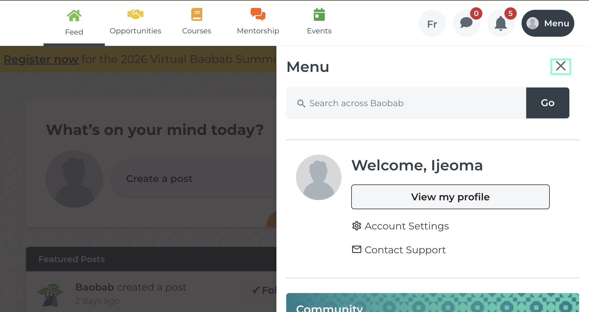
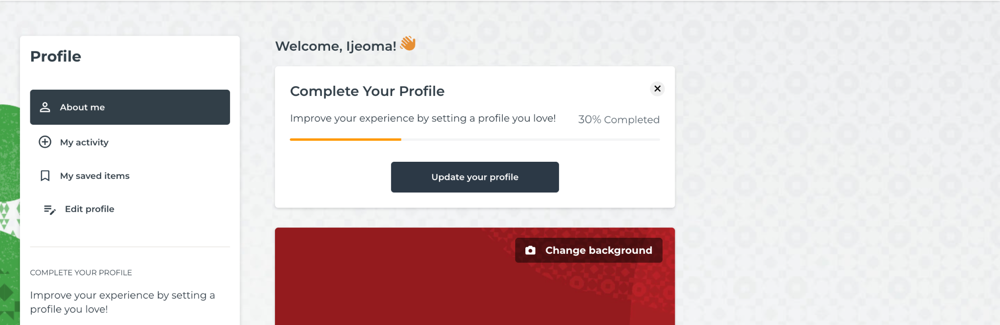
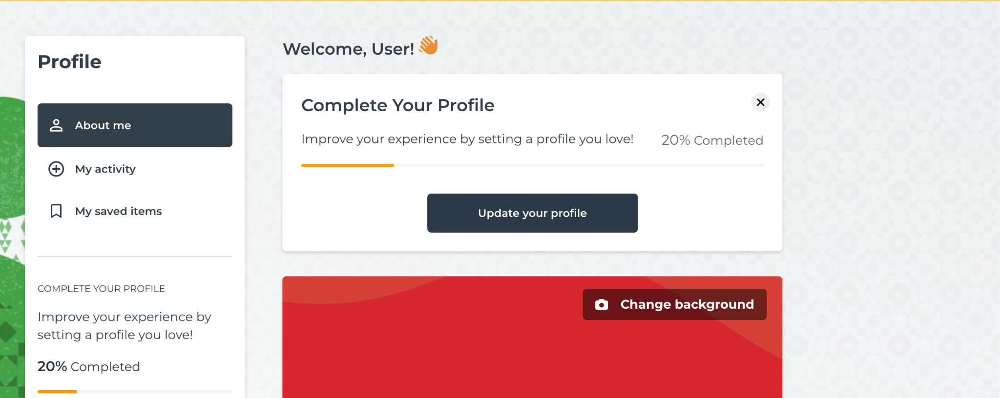

1
Open your profile
Log in, select Menu at the top right of the screen, then select View My Profile.

2
Open Edit Profile
From your profile, select Edit Profile from the menu on the left.

3
Choose what you want to update
Select the section you want to update, such as Education, Work Experience, or other profile information.

4
Save your changes
Make your changes and save your updates.
Still need help?
If this did not solve the problem, tell Support what you're experiencing.
Contact Support